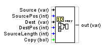

FUNCIÓN DE COPIADO DE DATOS DE UNA MATRIZ A OTRA

Permite copiar datos de una matriz tipo 1D a otra. tambien 1D. Los datos se seleccionan por la posicion del dato de comienzode la matriz fuente la posición del dato de destino y el número de datos a copiar.
Source: Matriz fuente.
SourcePos: Posición a partir de donde queremos copia.
Des: Matriz destino
DestPos: Posición comienzo a escribir en el destino.
SourceLenght: Numero de datos a traspasar.
Copy: Orden para realizar el traspaso.